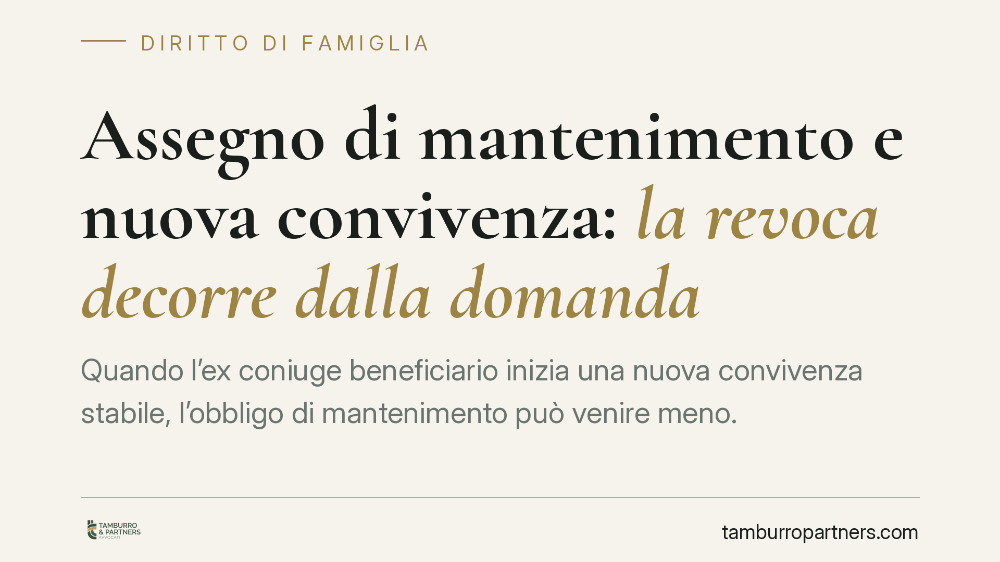

Assegno di mantenimento e nuova convivenza: la revoca decorre dalla domanda
Quando l'ex coniuge beneficiario inizia una nuova convivenza stabile, l'obbligo di mantenimento può venire meno. Ma da quando? Secondo un orientamento della Suprema Corte, la revoca opera dalla data di deposito della domanda giudiziale, non dal momento in cui si forma la nuova coppia. Una precisazione che incide direttamente sulle somme dovute e sulla loro recuperabilità.

Il punto della questione
La formazione di una nuova famiglia di fatto da parte dell'ex coniuge che percepisce l'assegno è da tempo una causa tipica di revisione del mantenimento. Il problema pratico, però, non è solo *se* l'assegno vada revocato, ma *da quando* la revoca produce effetti.
La distinzione non è teorica. Tra l'inizio di una convivenza e il deposito della domanda di revoca possono trascorrere mesi o anni. Stabilire la decorrenza significa decidere chi sopporta il peso economico di quel periodo intermedio.
Inquadramento normativo
Occorre tenere distinti due istituti, perché la giurisprudenza li tratta in modo differente.
Il primo è l'assegno di mantenimento tra coniugi separati (art. 156 c.c.), dovuto nella fase di separazione. Il secondo è l'assegno divorzile (art. 5 della legge 898/1970), che presuppone lo scioglimento del matrimonio e ha, secondo l'orientamento delle Sezioni Unite, una natura composita: assistenziale, compensativa e perequativa.
Proprio sulla componente compensativa dell'assegno divorzile le Sezioni Unite sono intervenute nel 2021, affermando che l'instaurazione di una stabile convivenza non comporta automaticamente la perdita integrale dell'assegno, dovendosi valutare la componente compensativa riconosciuta in funzione dei sacrifici compiuti durante il matrimonio. È un dato da ricordare: la nuova convivenza non è una clausola di estinzione automatica.
Sul piano della decorrenza, secondo un orientamento della Suprema Corte la modifica o la revoca dell'assegno per sopravvenuta convivenza opera dalla data di proposizione della domanda giudiziale. La ratio è coerente con un principio consolidato: le prestazioni a carattere alimentare o assistenziale già corrisposte sono irripetibili, cioè non si possono chiedere indietro, perché si presume consumate per il soddisfacimento di esigenze di vita. Retrodatare la revoca al momento in cui è iniziata la convivenza costringerebbe il beneficiario a restituire somme già destinate al mantenimento quotidiano.
Implicazioni pratiche
Per l'ex coniuge obbligato. Non conviene attendere. Finché non viene depositata la domanda di revisione, l'assegno resta dovuto nella misura stabilita, anche se la nuova convivenza è già in corso e documentabile. Il tempo trascorso in attesa non è recuperabile: ogni mese di ritardo nel promuovere il giudizio è un mese pagato senza possibilità di restituzione.
Per l'ex coniuge beneficiario. La stabilità della nuova relazione non travolge retroattivamente quanto percepito, ma espone alla revoca dalla domanda in avanti. Occorre valutare per tempo gli effetti economici di un giudizio di revisione, soprattutto se l'assegno è divorzile e include una componente compensativa che potrebbe non estinguersi integralmente.
La qualificazione dei fatti
Un'avvertenza di metodo. Non ogni relazione rileva: la giurisprudenza richiede una convivenza stabile e continuativa, idonea a configurare una nuova famiglia di fatto, non una semplice frequentazione o un rapporto saltuario. La differenza si gioca sul piano probatorio: coabitazione, progetto di vita comune, eventuale contribuzione economica reciproca, residenza condivisa.
La qualificazione dei fatti è decisiva e precede ogni ragionamento sulla decorrenza. Un quadro probatorio debole porta al rigetto della domanda, a prescindere dal principio di diritto.
Cosa fare in concreto
- Documentate per tempo la convivenza stabile dell'ex coniuge: residenza, coabitazione effettiva, elementi di un progetto di vita comune.
- Depositate senza indugio la domanda di revisione o revoca: la decorrenza degli effetti è ancorata a quella data, non all'inizio della relazione.
- Verificate la natura dell'assegno (separatizio o divorzile) e, nel caso di assegno divorzile, l'eventuale componente compensativa, che segue regole proprie.
- Non sospendete i pagamenti in modo unilaterale: l'inadempimento prima della pronuncia espone a conseguenze esecutive.
- Valutate una consulenza preventiva per calibrare tempi e strategia probatoria prima di avviare il giudizio.
Contributo informativo a cura di Tamburro & Partners - Avv. Giuseppe Tamburro. Non costituisce parere legale.
Ogni famiglia ha il suo equilibrio.
Separazione, divorzio, affidamento, assegno: se vuoi un confronto riservato su una specifica situazione, scrivi allo studio. Ti rispondiamo entro un giorno lavorativo.